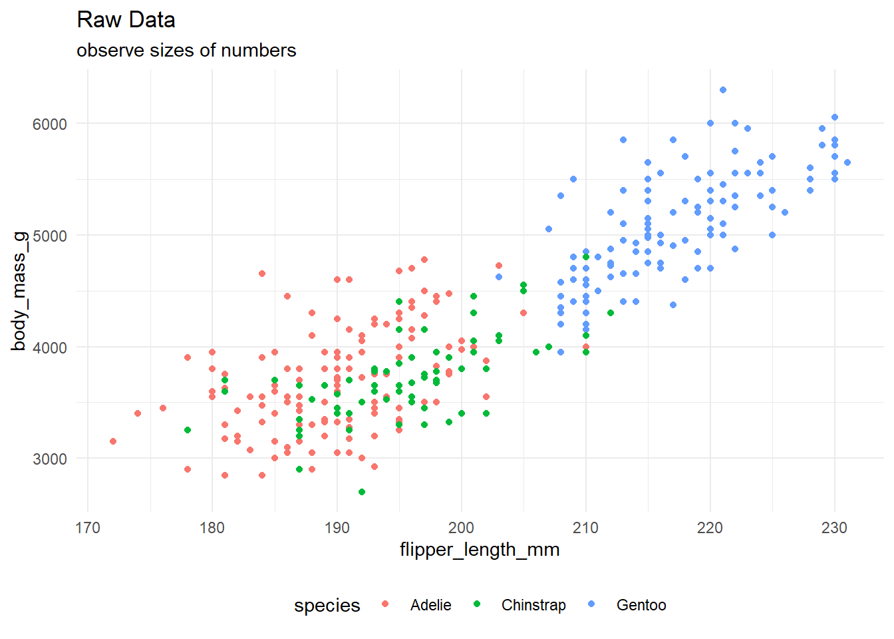
15: Image Processing
Session 15: Image Processing
Learning objectives:
- Review calculations in neural networks
- Explore image processing
- Introduce image augmentation
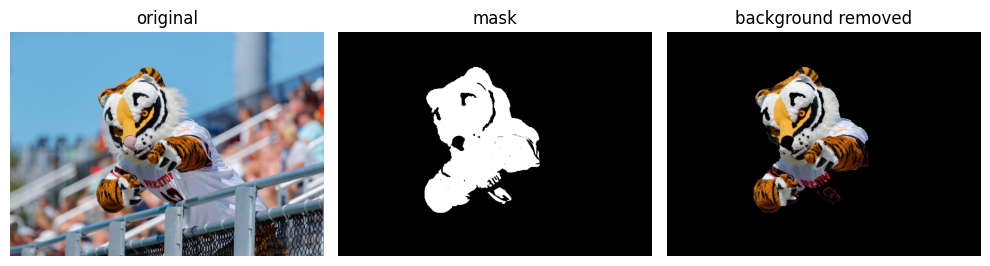
Preprocessing: Min-Max Normalization
motivation
For 32-bit float number representation
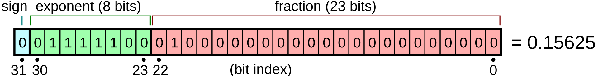
- range: \((1.1755 \times 10^{-38}, 1.7014 \times 10^{38})\)
Anticipating neural networks and performing many calculations, we want to avoid overflow or underflow errors.
Preprocessing Numbers
To make the numerical inputs and outputs more manageable, we will employ
- min-max normalization
- softmax
We want numerical inputs to be between 0 and 1, so we can employ min-max normalization:
\[\text{scaled}(x) = \frac{x - \text{min}}{\text{max} - \text{min}}\]
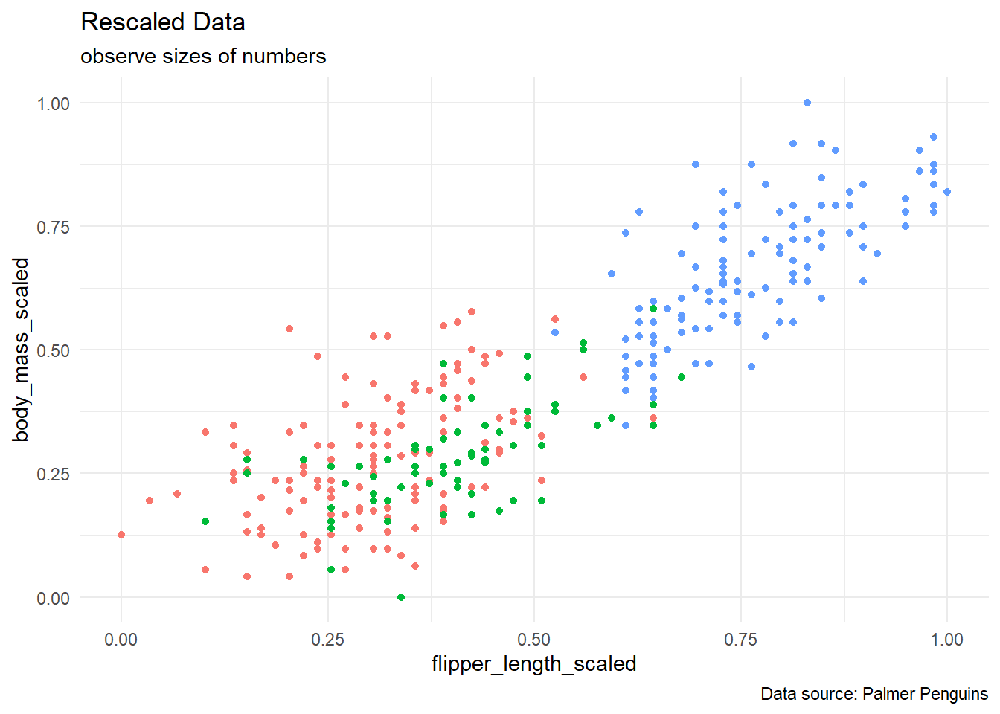
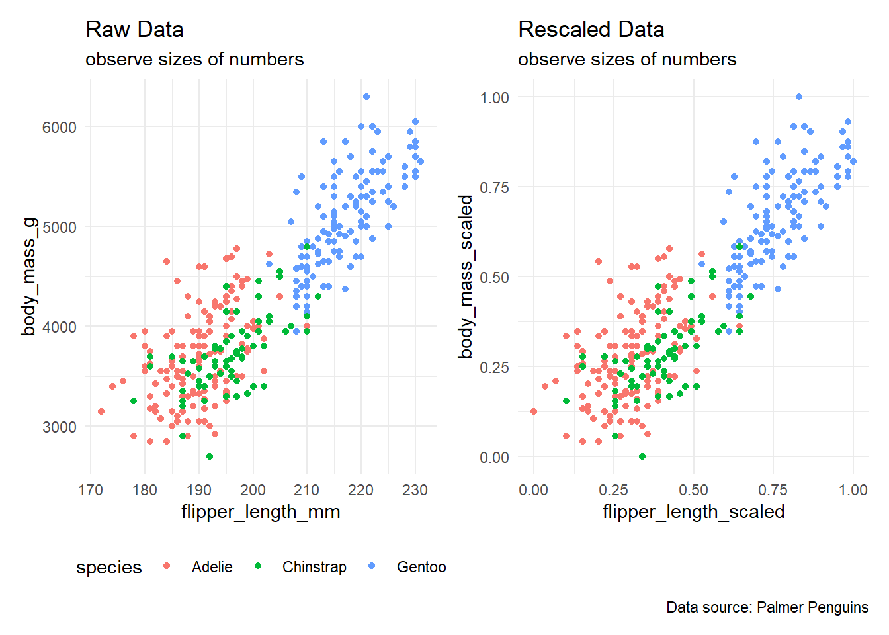
Forward Propogation
Trained Model
flowchart LR input_1[flipper length] input_2[body mass] output_1[Adelie] output_2[Chinstrap] output_3[Gentoo] input_1 -- -1.16A + 0.38 --> output_1 input_1 -- 0.24A - 0.38 --> output_2 input_1 -- 1.77A + 0.16 --> output_3 input_2 -- -0.05B + 0.38 --> output_1 input_2 -- 0.18B - 0.38 --> output_2 input_2 -- 1.07B + 0.16 --> output_3
input layer size: 2
output layer size: 3
fully-connected network: every output is connected to every input by an edge
- here: no hidden layer
- later: LSTM, transformers, encoder-decorders
Where did the coefficients come from?
We will train the neural network and compute the weights and bias values soon! For now, let us see how the forward calculations work in this trained model.
These will be poor results
The examples in today’s session will have poor results (i.e. accuracy values close to 50 percent). This is because of
- small data sets
- models run for a limited number of epochs (iterations)
Parameters
flowchart LR input_1[flipper length] input_2[body mass] output_1[Adelie] output_2[Chinstrap] output_3[Gentoo] input_1 -- -1.16A + 0.38 --> output_1 input_1 -- 0.24A - 0.38 --> output_2 input_1 -- 1.77A + 0.16 --> output_3 input_2 -- -0.05B + 0.38 --> output_1 input_2 -- 0.18B - 0.38 --> output_2 input_2 -- 1.07B + 0.16 --> output_3
This model has 9 parameters:
- weights
\[\begin{array}{rcr} w_{1,1} & \approx & -1.16 \\ w_{1,2} & \approx & 0.24 \\ w_{1,3} & \approx & 1.77 \\ w_{2,1} & \approx & -0.05 \\ w_{2,2} & \approx & 0.18 \\ w_{2,3} & \approx & 1.07 \\ \end{array}\]
- bias
\[\begin{array}{rcr} b_{1} & \approx & 0.76 \\ b_{2} & \approx & -0.76 \\ b_{3} & \approx & 0.32 \\ \end{array}\]
Split Bias?
Editor’s note: for the sake of simplifying the diagram, the bias values were split in half (two input variables). In practice, the bias values are added after the weight multiplications. This will be more apparent in the matrix computations later. Furthermore, the values going into the output nodes are also added together.
Obvious Example
What will our model predict for a Gentoo penguin whose measurements (after min-max normalization) include a flipper length of 0.75 and a body mass of 0.75?
flowchart LR input_1[0.75] input_2[0.75] output_1[-0.1475] output_2[-0.4450] output_3[2.4500] input_1 -- -1.16*0.75 + 0.38 --> output_1 input_1 -- 0.24*0.75 - 0.38 --> output_2 input_1 -- 1.77*0.75 + 0.16 --> output_3 input_2 -- -0.05*0.75 + 0.38 --> output_1 input_2 -- 0.18*0.75 - 0.38 --> output_2 input_2 -- 1.07*0.75 + 0.16 --> output_3
Since the output value is the largest for the Gentoo label, we predict that such a penguin is of the Gentoo species.
Tough Classification
What will our model predict for a penguin whose measurements (after min-max normalization) include a flipper length of 0.301 and a body mass of 0.301?
flowchart LR input_1[0.301] input_2[0.301] output_1[0.37579] output_2[-0.63358] output_3[1.17484] input_1 -- -1.16*0.301 + 0.38 --> output_1 input_1 -- 0.24*0.301 - 0.38 --> output_2 input_1 -- 1.77*0.301 + 0.16 --> output_3 input_2 -- -0.05*0.301 + 0.38 --> output_1 input_2 -- 0.18*0.301 - 0.38 --> output_2 input_2 -- 1.07*0.301 + 0.16 --> output_3
Since the output value is the largest for the Gentoo label, we predict that such a penguin is of the Gentoo species.
However, the output values should have favored the Adelie and Chinstrap penguins here.
Activation Functions
Can you name a function whose domain is all real numbers but its range is restricted to \((0,1)\)?
Can you name a function whose domain is all real numbers but its range is restricted to \((-1,1)\)?
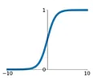
\[f(x) = \frac{1}{1 + e^{-x}}\]
- domain: \((-\infty, \infty)\)
- range: \((0,1)\)
derivative:
\[f'(x) = f(x)[1 - f(x)]\]
- 2 function calls
- one multiplication, one subtraction
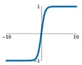
\[f(x) = \tanh(x) = \frac{e^{x} - e^{-x}}{e^{x} + e^{-x}}\]
- domain: \((-\infty, \infty)\)
- range: \((-1,1)\)
derivative:
\[f'(x) = 1 - \tanh^{2}(x)\]
- 2 function calls
- one multiplication, one subtraction
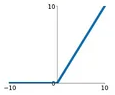
\[f(x) = \begin{cases}x, & x \geq 0 \\ 0, & x < 0\end{cases}\]
- domain: \((-\infty, \infty)\)
- range: \((0,\infty)\)
derivative:
\[f'(x) = \begin{cases}1, & x > 0 \\ 0, & x < 0\end{cases}\]
Bias
Suppose that the high temperature observations at Princeton (in degrees Fahrenheit) are usually between 16 and 90 degrees and that, relatively speaking, local people consider it to be a “warm day” if the temperature is at least 60 degrees (“cold day” otherwise):
\[f(H) = \begin{cases} \text{warm day}, & H \geq 60 \\ \text{cold day}, & H < 60 \\ \end{cases}\]
We can shift the values by a bias. For example, if we use a bias value of \(b = 60\), then
\[f(H-60) = \begin{cases} \text{warm day}, & H-60 \geq 0 \\ \text{cold day}, & H-60 < 0 \\ \end{cases}\]
puts the decision boundary at a value of zero in the new units.
\[f(x) = \begin{cases}x, & x \geq 0 \\ 0, & x < 0\end{cases}\]
- domain: \((-\infty, \infty)\)
- range: \((0,\infty)\)
derivative:
\[f'(x) = \begin{cases}1, & x > 0 \\ 0, & x < 0\end{cases}\]
A TPU (tensor processing unit) would only have to check one bit!
Post-Processing: Softmax
Another way to normalize a vector of numerical observations is to employ the softmax
\[\text{Softmax}(\vec{x})_{i} = \frac{e^{x_{i}}}{\sum_{i=1}^{n}e^{x_{i}}}\]
Obvious Example
What will our model predict for a penguin whose measurements (after min-max normalization) include a flipper length of 0.75 and a body mass of 0.75?
flowchart LR input_1[0.75] input_2[0.75] output_1[-0.1475] output_2[-0.4450] output_3[2.4500] input_1 -- -1.16*0.75 + 0.38 --> output_1 input_1 -- 0.24*0.75 - 0.38 --> output_2 input_1 -- 1.77*0.75 + 0.16 --> output_3 input_2 -- -0.05*0.75 + 0.38 --> output_1 input_2 -- 0.18*0.75 - 0.38 --> output_2 input_2 -- 1.07*0.75 + 0.16 --> output_3
\(\frac{e^{-0.1475}}{e^{-0.1475} + e^{-0.4450} + e^{2.4500}} \approx 0.0659\) \(\frac{e^{-0.4450}}{e^{-0.1475} + e^{-0.4450} + e^{2.4500}} \approx 0.0489\) \(\frac{e^{2.4500}}{e^{-0.1475} + e^{-0.4450} + e^{2.4500}} \approx 0.8851\)
Tough Classification
What will our model predict for a penguin whose measurements (after min-max normalization) include a flipper length of 0.301 and a body mass of 0.301?
flowchart LR input_1[0.301] input_2[0.301] output_1[0.37579] output_2[-0.63358] output_3[1.17484] input_1 -- -1.16*0.301 + 0.38 --> output_1 input_1 -- 0.24*0.301 - 0.38 --> output_2 input_1 -- 1.77*0.301 + 0.16 --> output_3 input_2 -- -0.05*0.301 + 0.38 --> output_1 input_2 -- 0.18*0.301 - 0.38 --> output_2 input_2 -- 1.07*0.301 + 0.16 --> output_3
\[\begin{array}{c|c|c} \text{signal} & \text{exponent} & \text{softmax} \\ \hline 0.3758 & e^{0.3758} & 0.2787 \\ -0.6336 & e^{-0.6336} & 0.1016 \\ 1.1748 & e^{1.1748} & 0.6197 \\ \end{array}\]
Does the softmax output create a probability distribution?
It’s debatable.
While the values from a softmax computation are positive sum up to one (up to a rounding error), it is debatable whether or not the softmax result is a probability distribution.
- Nodes earlier in the network (especially in neural networks) can be permuted. While we might end up with the same distribution, the underlying weights might be quite different.
- What do these proportions represent? Later, if we use this softmax output as inputs for another module, then we can say something like “The output signal is about 28 percent Adelie, 10 percent Chinstrap, and 62 percent Gentoo.”
- Are these proportions unbiased estimators of population proportions?
Derivative
Softmax function \[\sigma({\vec{x}})_{i} = \frac{e^{x_{i}}}{\sum_{i=1}^{n}e^{x_{i}}}\]
Derivative \[\frac{\partial \sigma_{k}}{\partial x_{i}} = \sigma_{k}(\delta_{ik} - \sigma_{i})\] where \[\delta_{ik} = \begin{cases} 1, & i = k \\ 0, & i \neq k \\ \end{cases}\]
Loss
Toward training and backprogation, for a classification task, we could use the sum-of-squared residuals (SSR) to calculate the loss.
\[\text{SSR} = \sum_{i=1}^{n}(\text{observed}_{i} - \text{predicted}_{i})^{2}\]
Back Propogation
Here, we will see how backpropogation works to update one weight in our network.
Initialization
Consider a fully-connected network (FCN) where all of the weights have been initialized to the same uniform value of 0.2 and each bias has been initialized to be zero. What will our model predict for a Gentoo penguin whose measurements (after min-max normalization) include a flipper length of 0.75 and a body mass of 0.75?
flowchart LR input_1[0.75] input_2[0.75] output_1[0.3] output_2[0.3] output_3[0.3] input_1 -- 0.2*0.75 + 0 --> output_1 input_1 -- 0.2*0.75 + 0 --> output_2 input_1 -- 0.2*0.75 + 0 --> output_3 input_2 -- 0.2*0.75 + 0 --> output_1 input_2 -- 0.2*0.75 + 0 --> output_2 input_2 -- 0.2*0.75 + 0 --> output_3
\[\begin{array}{c|c|c} \text{predicted} & \text{observed} & \text{residual} \\ \hline 0.3333 & 0 & 0.3333 \\ 0.3333 & 0 & 0.3333 \\ 0.3333 & 1 & -0.6667 \\ \end{array}\]
Note: this initialization assumes that each penguin species is equally likely.
Partial Derivatives
Here, we will update weight \(w_{2,3} = 0.2\). The composition of the linear transformation, softmax, and SSR loss yields the following partial derivatives:
- linear transformation:
\[\frac{\partial L}{\partial w_{2,3}} = x_{2}\]
- softmax:
\[\frac{\partial \sigma_{3}}{\partial L_{3}} = (\sigma_{3})(1 - \sigma_{3})\]
- loss:
\[\frac{\partial\text{SSR}}{\partial{\sigma_{3}}} = -2(\text{observed}_{3} - \text{predicted}_{3})\]
Chain Rule
Putting it all together, we can now compute the overall derviative through the chain rule:
\[\begin{array}{rcl} \frac{\partial\text{SSR}}{\partial w_{2,3}} & = & \frac{\partial\text{SSR}}{\partial{\sigma_{3}}} \cdot \frac{\partial \sigma_{3}}{\partial L_{3}} \cdot \frac{\partial L}{\partial w_{2,3}} \\ ~ & = & -2(\text{observed}_{3} - \text{predicted}_{3}) \cdot (\sigma_{3})(1 - \sigma_{3}) \cdot x_{2} \\ ~ & = & -2(1 - 0.3333) \cdot (0.3)(1 - 0.3) \cdot (0.75) \\ ~ & \approx & -0.2100 \\ \end{array}\]
Why do we use the softmax?
One question that may appear here is, “Why do we use min-max normalization for the input layer but then use a softmax for the output layer?”
min-max normalization
- pro: easier to calculate (more easily vectorized)
- con: the derivative is simply just the number one (same if we used an argmax), so applying this normalization does not create information for us for back propogation
softmax
- pro: derivative values between 0 and 1
- con: more intense calculation (especially for long vectors)
Why don’t we use the SSR?
The derivative values from the SSR are relatively small, and hence the learning is slow.
Update
Finally, we can apply a step size
\[\text{step size} = \text{derivative} \cdot \text{learning rate}\] If we had a learning rate of 0.1 (i.e. as a hyperparameter), then our step size here is
\[\text{step size} = (-0.2100)(0.1) = -0.0210\] Our new weight is
\[\begin{array}{rcl} \text{new weight} & = & \text{old weight} - \text{step size} \\ ~ & = & 0.2 - (-0.0210) \\ ~ & = & 0.2210 \\ \end{array}\]
Feed Foward
Applying this new weight, our network now looks like this
flowchart LR input_1[0.75] input_2[0.75] output_1[0.3000] output_2[0.3000] output_3[0.3158] input_1 -- 0.2*0.75 + 0 --> output_1 input_1 -- 0.2*0.75 + 0 --> output_2 input_1 -- 0.2*0.75 + 0 --> output_3 input_2 -- 0.2*0.75 + 0 --> output_1 input_2 -- 0.2*0.75 + 0 --> output_2 input_2 -- 0.2210*0.75 + 0 --> output_3
\[\begin{array}{c|c|c} \text{predicted} & \text{observed} & \text{residual} \\ \hline 0.3316 & 0 & 0.3316 \\ 0.3316 & 0 & 0.3316 \\ 0.3366 & 1 & -0.6637 \\ \end{array}\]
Now:
- the prediction moved correctly toward “Gentoo”!
- the residuals decreased!
Python Code
Tensors
We will use tensors in Pytorch Lightning
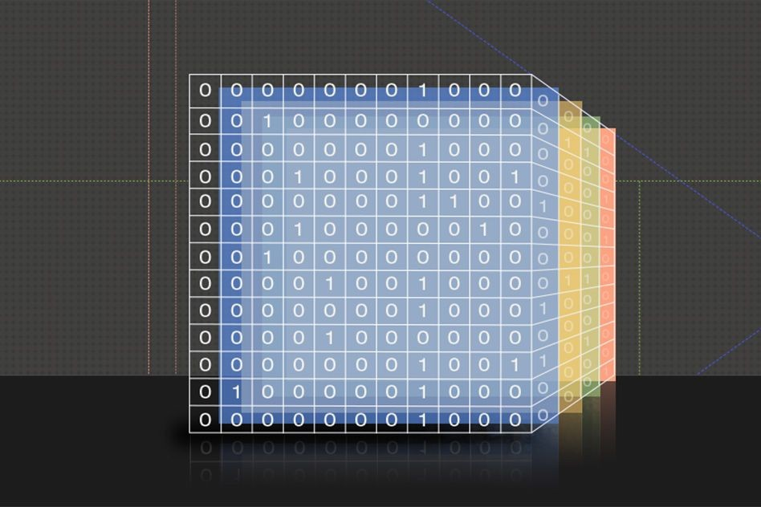
- image source: MIT
What are tensors?
At first, tensors (for machine learning) are multidimensional arrays.
- a value is a 0D tensor
- an array is a 1D tensor
- a matrix is a 2D tensor
Why do we use tensors?
- accelerated computations via graphical processing units (GPUs)
- automatic differentiation
- helps with parallelizable processes
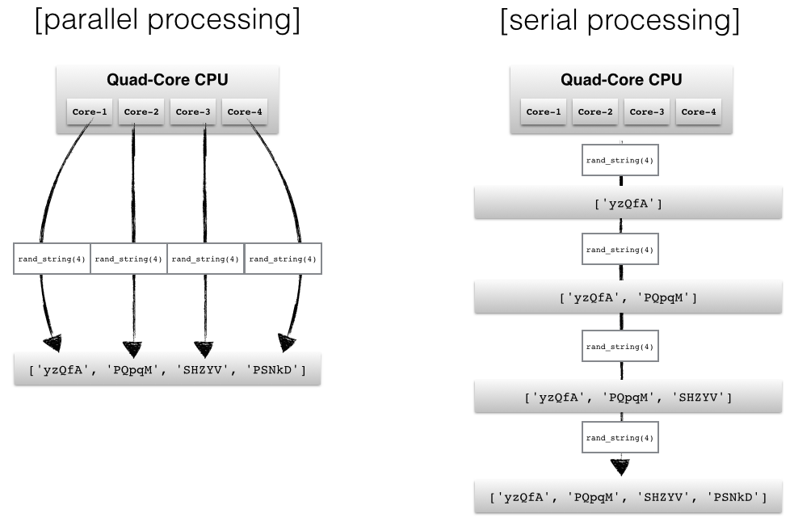
- image source: Faisal Shahbaz
Object-Oriented Programming
Framework choice:
- Keras
- PyTorch
- Scikit Learn
- TensorFlow
Why Pytorch?
- recency bias (Derek studied these concepts with PyTorch)
- object-oriented programming
Why Object-Oriented Programming?
Later concepts are probably better understood as modular steps in a workflow, which lend themselves to object-oriented programming (OOP)
For the penguins examples, we needed a fully-connected network whose input layer size was 2 and whose output layer size was 3
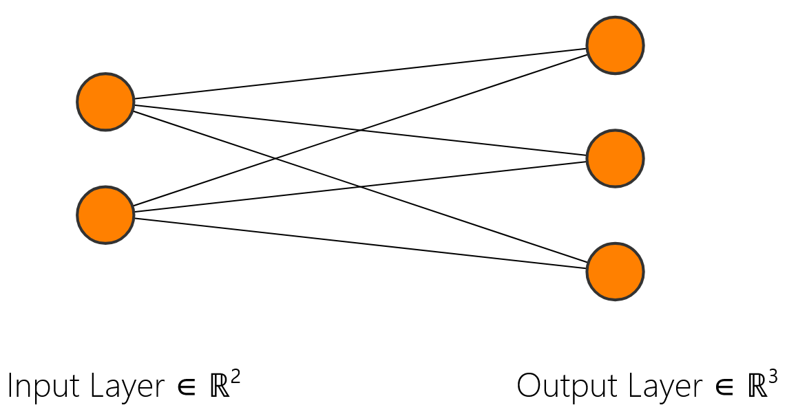
- Python code:
model = FCN(2,3)
For the next example, we need a fully-connected network whose input layer size is 4 and whose output layer size is 2
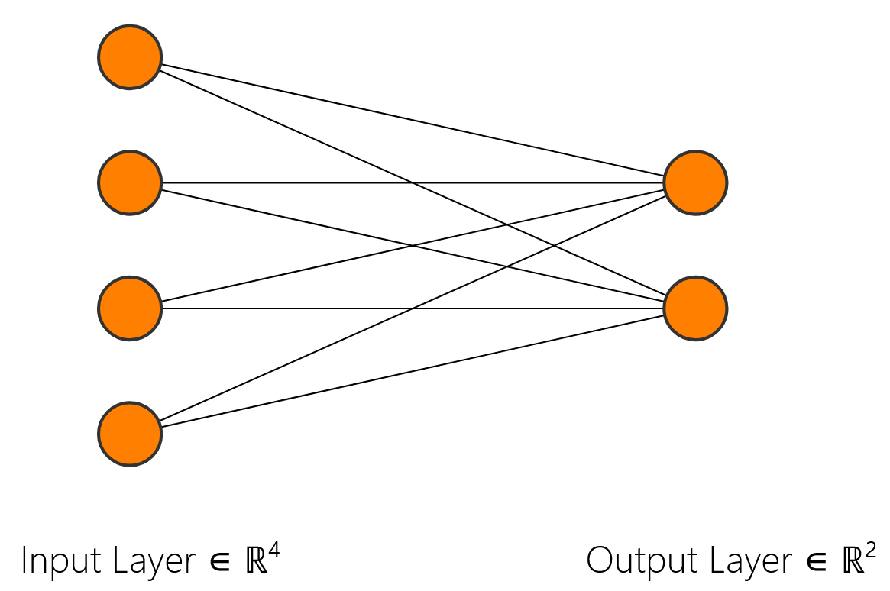
- Python code:
model = FCN(4,2)
class FCN(pl.LightningModule):
# Fully-Connected Network
# assumes no hidden layer (i.e. going directly into activation functions)
def __init__(self, input_layer_size, output_layer_size):
super().__init__()
self.input_layer_size = input_layer_size
self.output_layer_size = output_layer_size
self.fc1 = nn.Linear(input_layer_size, output_layer_size)
self.test_step_outputs = []
def forward(self, x):
x = F.relu(self.fc1(x))
return x
def training_step(self, batch, batch_idx):
x, y = batch
output = self(x)
loss = F.cross_entropy(output, y)
return {'loss':loss}
def test_step(self, batch, batch_idx):
x, y = batch
output = self(x)
loss = F.cross_entropy(output, y)
self.test_step_outputs.append(loss)
return {'loss':loss}
def on_test_epoch_end(self):
epoch_average = torch.stack(self.test_step_outputs).mean()
self.log("test_epoch_average", epoch_average)
self.test_step_outputs.clear()
def configure_optimizers(self):
optimizer = torch.optim.SGD(self.parameters(), lr=lr)
return optimizer
DCP1
Image Processing
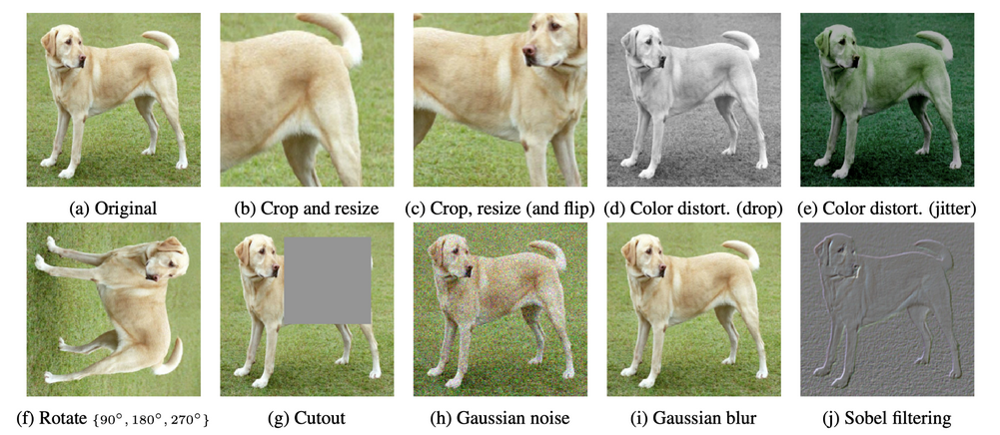
- image source: A Simple Framework for Contrastive Learning of Visual Representations, Chen et al., ICML 2020
- image source: Princeton Sports
Saliency Maps
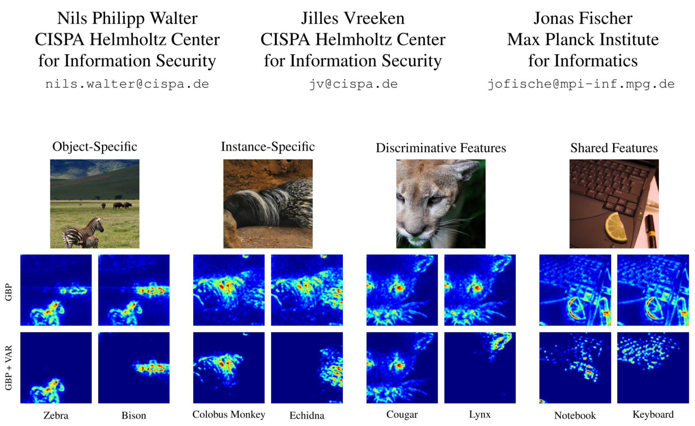
- image source: Walter, et al
DCP2
Ethics Segment: Voices
In 2025, New Era unveiled their lineup of fusion caps for baseball franchises.
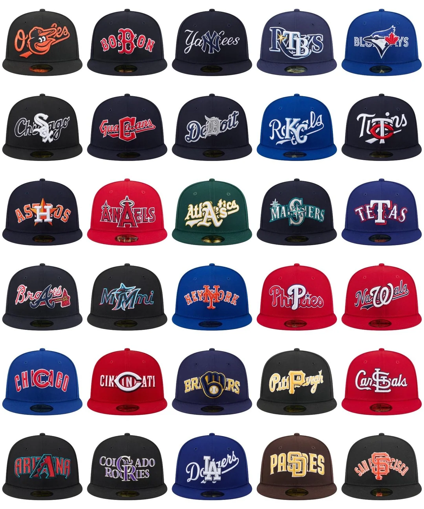
Some hats (such as this one from 2024) raised some concerns
The company had to recall many of its products.
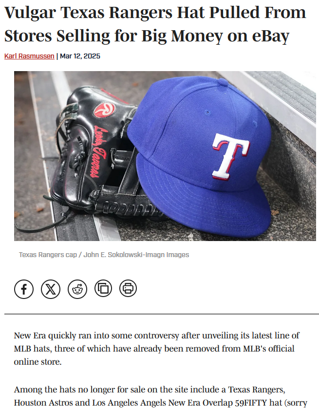
- image credit: Sports Illustrated
DCP3
ImageNet
- Dr Fei Fei Li
- Princeton Class of 1999
- Pre-Read Selection for Class of 2028
Biederman’s number: “30,000 unique concepts might provide a complete foundation for understanding the visual world”
- ImageNet competition
- AlexNet: solved by convolutional neural networks in 2012
Image Augmentation
- rotation
- translation
- reflections
- etc.
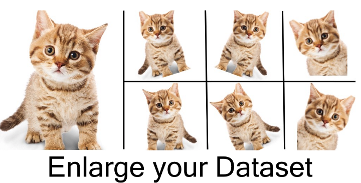
- image source: Arun Gandhi
Quo Vadimus?
due this Friday (Oct 31):
- Precept 7 (1 hour)
- Multipass: xLSTM (20 minutes)
- Literature Search (10 minutes)
Our SML 301 lecture session for Monday, November 24 will be remote (Zoom).
- guest speaker from AI industry
Footnotes
(optional) Additional Resources and References
- Pytorch history by Alex Moltzau
Session Info
sessionInfo()R version 4.5.1 (2025-06-13 ucrt)
Platform: x86_64-w64-mingw32/x64
Running under: Windows 10 x64 (build 19045)
Matrix products: default
LAPACK version 3.12.1
locale:
[1] LC_COLLATE=English_United States.utf8
[2] LC_CTYPE=English_United States.utf8
[3] LC_MONETARY=English_United States.utf8
[4] LC_NUMERIC=C
[5] LC_TIME=English_United States.utf8
time zone: America/New_York
tzcode source: internal
attached base packages:
[1] stats graphics grDevices utils datasets methods base
other attached packages:
[1] lubridate_1.9.4 forcats_1.0.0 stringr_1.5.1
[4] dplyr_1.1.4 purrr_1.1.0 readr_2.1.5
[7] tidyr_1.3.1 tibble_3.3.0 ggplot2_4.0.0
[10] tidyverse_2.0.0 patchwork_1.3.1 palmerpenguins_0.1.1
[13] ggtext_0.1.2
loaded via a namespace (and not attached):
[1] Matrix_1.7-3 gtable_0.3.6 jsonlite_2.0.0 compiler_4.5.1
[5] tidyselect_1.2.1 Rcpp_1.1.0 xml2_1.3.8 png_0.1-8
[9] scales_1.4.0 yaml_2.3.10 fastmap_1.2.0 lattice_0.22-7
[13] reticulate_1.43.0 R6_2.6.1 labeling_0.4.3 generics_0.1.4
[17] knitr_1.50 htmlwidgets_1.6.4 tzdb_0.5.0 pillar_1.11.0
[21] RColorBrewer_1.1-3 rlang_1.1.6 stringi_1.8.7 xfun_0.52
[25] S7_0.2.0 timechange_0.3.0 cli_3.6.5 withr_3.0.2
[29] magrittr_2.0.3 digest_0.6.37 grid_4.5.1 gridtext_0.1.5
[33] rstudioapi_0.17.1 hms_1.1.3 lifecycle_1.0.4 vctrs_0.6.5
[37] evaluate_1.0.4 glue_1.8.0 farver_2.1.2 rmarkdown_2.29
[41] tools_4.5.1 pkgconfig_2.0.3 htmltools_0.5.8.1